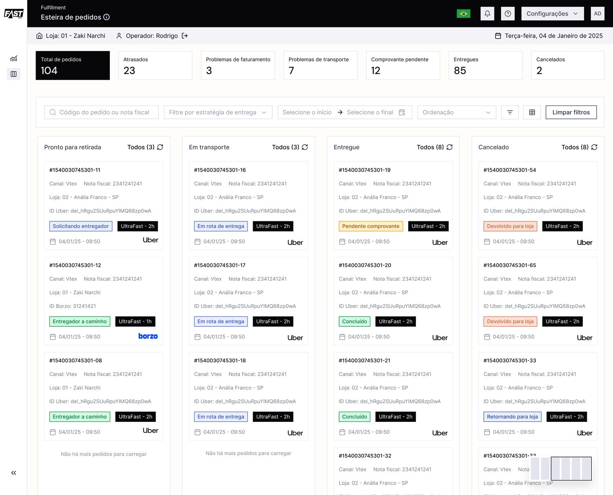
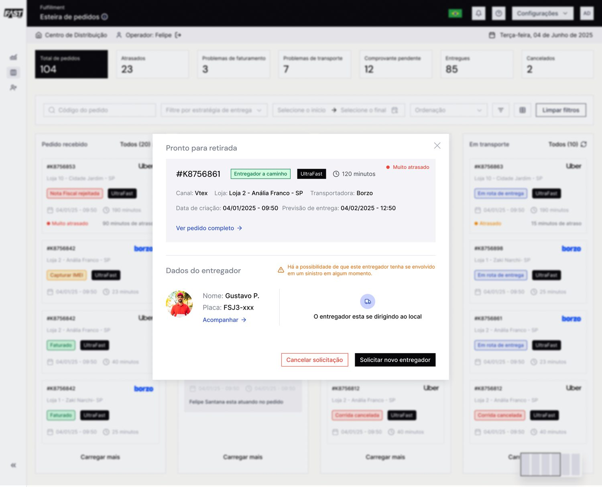
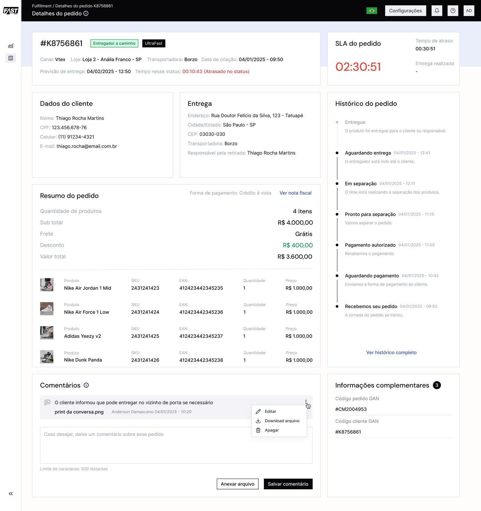
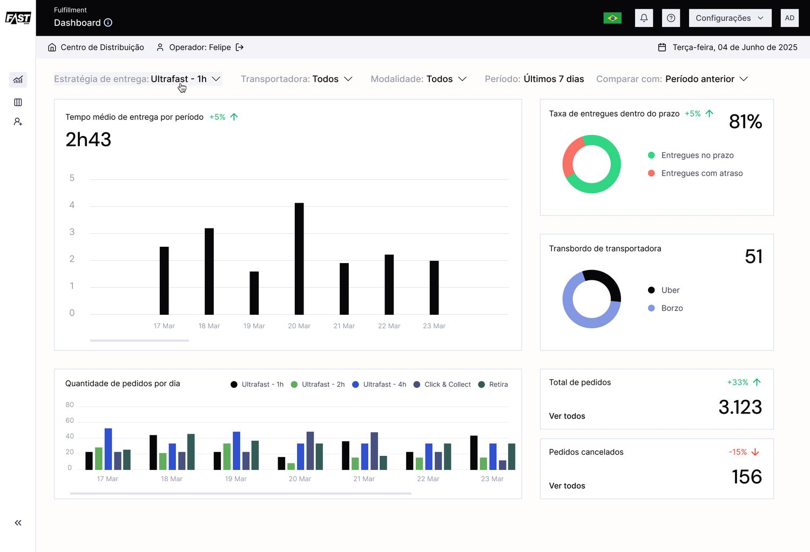

Fast Shop is one of Brazil's top electronics retailers, with 80+ stores and 22,000+ SKUs. Before Kruzer, getting a product from a store shelf into a customer's hands involved phone calls, spreadsheets, and a lot of guessing about where an order actually was. My job was to design the system that replaced all of that: Pick & Pack, a platform that tracks every order in real time, from the moment it's placed to the moment it's delivered, in as little as two hours.
The problem wasn't just software. It was three different people
A single order touches at least three roles: someone in the store who has to find and pack the product, someone at the distribution center routing it to the right courier, and a driver who has to actually get it there. Each of them needs different information at different moments, and if any one of them is confused, the order slips. Most fulfillment tools are built around one of these perspectives and force the other two to adapt. I designed Pick & Pack around all three from day one.
How I worked: designing for the warehouse floor, not the mockup
Enterprise fulfillment is unforgiving of designers who work from assumptions: the person using this all day knows things you don't. So the process was built around getting close to the actual operation and correcting fast when I was wrong.
-
Mapped the order journey across all three roles
Before any UI, I mapped how a single order moves from store to distribution center to driver, and where information got dropped between them. That map is what made "design for three people at once" a concrete requirement instead of a slogan.
-
Learned the exceptions from the people who live them
The important flows in logistics aren't the happy path. They're failed deliveries, returns, and late couriers. I worked with operators to surface the edge cases the first version missed, like orders that fail delivery and have nowhere to go.
-
Iterated the kanban after the first version fell short
The initial pipeline view didn't match how operators actually think about their day. I reworked it against their real mental model, and added the "returning to store" status once the data showed how many orders were quietly failing with no next step.
-
Built the system so decisions stayed consistent
With multiple products drawing on the same data, I built Compass, the design system, so a status pill or an alert means the same thing everywhere, which is what kept the platform coherent as it scaled across stores.
My role
Senior product designer owning Pick & Pack, the Compass design system, PIM, and DevTools end to end, from research and flows through UI and design-system governance.
The team
Worked with product management, Fast Shop's operations stakeholders as domain experts, and the engineering teams building each product on the shared platform.

The distribution center's order queue: every order, its status, carrier, and how long it's been sitting, all in one scannable table.
"81% delivered on time" only means something if the other 19% are easy to find and fix.
The queue view above is where operators live most of the day. It had to answer "what needs my attention right now" in under a second, which is why status, delay, and carrier are the first three things your eye hits, before the order number even matters.
A pipeline you can see, not just a list you can search
For store operators managing dozens of orders in different stages at once, a flat table wasn't enough. They needed to see the shape of their day. I designed a kanban view that mirrors how an order actually moves: ready for pickup, in transit, delivered, or cancelled, including a status we added later, "returning to store," for the failed-delivery cases that used to get lost entirely.

Status pipeline view: the "Returning to Store" status (highlighted) was a gap we closed after seeing how many orders were quietly failing delivery with no clear next step.
Where the first version was wrong
The kanban above isn't the one I shipped first. The initial pipeline view didn't match how operators actually think about their day, so I reworked it against their real mental model instead of patching around the mismatch. "Returning to Store" didn't exist in that first version either: it went in once the data showed how many failed deliveries were quietly stalling with no next step for anyone to act on.
Getting the first version wrong wasn't the risk. Shipping it small enough to find out fast, and rebuilding instead of defending it, was the point.
When something goes wrong, don't make the operator dig for it
Delays and driver issues are where fulfillment tools tend to fall apart. The information that matters (is this driver reliable? how late is this, really? what are my options?) is usually buried three clicks deep. I designed the driver-assignment flow to surface risk before it becomes a problem: if a courier has a history of incidents, that flag shows up right where the operator is about to make a decision, not after.

Driver detail modal: surfacing an incident-risk flag exactly where the operator decides whether to keep or replace the courier.
Every order can become a customer service conversation
When a customer calls about their order, the person answering needs the full story in seconds: SLA countdown, delivery address, order history, and a place to log what was said, without switching tools. The order detail view brings all of that together, including a live countdown against the SLA so operators know exactly how much runway they have before an order is officially late.

Order detail: SLA countdown, customer and delivery data, product summary, and a full status history in one view.
Compass: the design system underneath all of it
None of the screens above were designed in isolation. Alongside Pick & Pack, I built Compass, Kruzer's design system, from scratch: components, tokens, and governance rules, initially for this product and later adopted across the rest of the platform. It's the reason a status pill means the same thing whether you're looking at the queue, the kanban board, or the order detail page, and it's what took UI inconsistencies down by 40% and cut delivery time on new screens by roughly 25%.
Compass is also the third design system I've built from scratch, at a third company. By now it's less an occasional side project than a pattern I default to whenever a platform has more than one team building on shared data: shared components only stay coherent if someone owns the governance, not just the component library.
How it was measured: the Compass figures reflect the drop in reported UI inconsistencies and the reduction in design-to-build time on new screens once teams built from shared components instead of one-off designs.
A live slice of Compass: every component here reads from the same three tokens. Change one, and the whole set stays coherent. That is the entire argument for a design system, in about four seconds.
The results, at a glance
Three months after rollout, on-time delivery held at 81% even as order volume grew, and for the first time, operators had a single dashboard to see delivery time, carrier performance, and cancellations without exporting anything to a spreadsheet.

The performance dashboard operators check every morning: delivery time, on-time rate, carrier load, and order volume in one screen.
Also part of the platform
Pick & Pack was the flagship, but it launched alongside two other products I designed on the same foundation:
PIM: Product Information Management
End-to-end catalog management for 22,000+ SKUs, the system that feeds accurate product data into every storefront and order.
DevTools
A configuration console built for engineers, not shoppers: gateway and API consumer management, so integrations don't require a ticket to marketing.